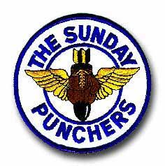
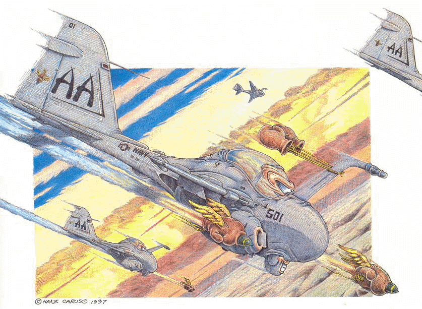
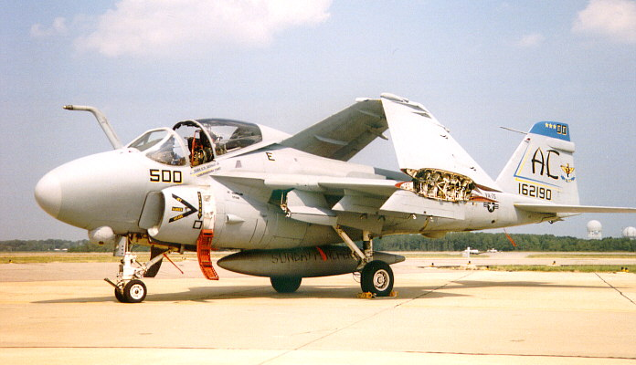

If you are looking to get in touch with your squadronmates, please head to
the VA-75 Facebook Group Page that is active with ex-Punchers from every decade, Officer and Enlisted.
Attack Squadron 75 (VA-75) was first commissioned on 20 July 1943 as Bombing Squadron EIGHTEEN (VB-18) flying the Douglas SBD "Dauntless" dive bomber. Following transition to the Curtiss SB2C "Helldiver," VB-18 embarked in USS INTREPID (CV 11) for combat in the Pacific. The squadron flew numerous missions over the Philippines and Okinawa, including the Battle of Leyte Gulf, 24-26 October 1944.
Following World War II, the squadron transitioned to the F4U "Corsair" and later to the AD-1 "Skyraider." Additionally, the squadron's designation was changed to VA7A, then to Attack Squadron 74, and finally to Attack Squadron 75 in 1950. In 1952, Attack Squadron 75 entered combat in the Pacific Theater again embarked in USS BON HOMME RICHARD (CV 31). The Sunday Punchers attacked hydroelectric and industrial complexes in North Korea and provided close air support to troops in South Korea.
September 1963 began a new era of naval aviation when VA-75 became the first fleet squadron to fly the Grumman A-6A "Intruder." The Intruder was designed to carry the fight to the enemy in any weather and following complete transition in early 1964, VA-75 began operating the A-6A at sea in preparation for combat.
In 1965, the squadron deployed to the Western Pacific in USS INDEPENDENCE (CV 62) and introduced the Intruder to combat operations in Southeast Asia. While in the Tonkin Gulf, the Punchers delivered over two million pounds of ordnance on enemy targets. In 1968, VA-75 made its second deployment to Vietnam in USS KITTY HAWK (CV 63). The squadron dropped over 13 million pounds of ordnance on enemy targets, and set records for the most missions and hours flown in combat by an A-6 squadron. For this achievement, Attack Squadron 75 earned the Presidential Unit Citation.
The Sunday Punchers made three deployments to the Mediterranean Sea in USS SARATOGA (CV 60), earning the Battle "E" and the Meritorious Unit Commendation. While scheduled for a May 1972 deployment as part of the Sixth Fleet, the "Sunday Punchers" received 48 hours notice in early April to embark all aircraft in USS SARATOGA (CV 60) for an emergency deployment. By May, VA-75 was again flying combat missions against North Vietnam from the "Fighting Cock" on Yankee Station.
Operating in the Gulf of Tonkin through January 1973, VA-75 repeatedly attacked North Vietnamese supply lines. The squadron's exemplary performance during Linebacker II operations in December 1972 helped to finally bring the Vietnam war to a close.
The Sunday Punchers returned to NAS Oceana in February 1973, and received the updated A-6E "Intruder." For the squadron's superb performance in 1973, the Chief of Naval Operations awarded the Sunday Punchers the coveted RADM. C. Wade McClusky award, recognizing VA-75 as the Navy's most outstanding attack squadron.
From September 1974 through 1980, VA-75 embarked for five more deployments as part of the Sixth Fleet aboard USS SARATOGA (CV 60), participating in numerous exercises and responding to crises in the Eastern Mediterranean Sea. Prior to the 1980 deployment, the Sunday Punchers completed the transition to a more capable Intruder variant, the A-6E TRAM.
In July 1981, VA-75 embarked in USS JOHN F. KENNEDY (CV 67) and commenced preparations for an Indian Ocean deployment. During the demanding training cycle, the Sunday Punchers distinguished themselves by winning the annual Intruder Bombing Derby and the prestigious Hughes Trophy for operational and maintenance excellence.
In 1983, USS JOHN F. KENNEDY (CV 67) became the first carrier to embark two A-6 squadrons instead of the usual complement of one A-6 and two light attack squadrons. Attack Squadron 85 joined the Sunday Punchers and Carrier Air Wing THREE to provide all-weather attack capabilities unprecedented in carrier aviation. The 1983-1984 deployment brought Attack Squadron 75 to the shores of Lebanon. In December 1983 and again in February 1984, squadron aircraft engaged in air strikes in support of multinational peacekeeping forces. The squadron completed the seven-month deployment without mishap, flying over 3,900 hours. In November 1984, VA-75 rapidly responded to an emergency deployment order to support anticipated contingency operations in the Eastern Mediterranean. In six days, seven aircrews completed extensive night low-level training and carrier qualifications, and were airlifted overseas with 80 technicians to augment Attack Squadron 65 in USS DWIGHT D. EISENHOWER (CVN 69) for three months.
During the 1986-1987 deployment in USS JOHN F. KENNEDY (CV 67), VA-75 participated in NATO and bilateral exercises, spanning the Mediterranean from Spain and Morocco to Turkey. The deployment was extended due to alert contingencies, but completed with a perfect safety record. Following the return to NAS Oceana, VA-75 became the first fleet squadron to operated the latest and final Intruder variant, the A-6E SWIP (System Weapons Integration Program). This version increased combat capabilities by incorporating the Navy's newest missiles and improving aircraft reliability and survivability.
In August 1988, VA-75 set sail again for the Mediterranean aboard USS JOHN F. KENNEDY (CV 67). Highlights of the deployment included flights over seven different countries, 21 exercises, 11 port visits, winning the 1988 Norden Pickle Barrel trophy for bombing excellence, and earning the Secretary of the Navy's Meritorious Unit Commendation for superior performance. The squadron returned to NAS Oceana on 1 February 1989.
In 1990, the Sunday Punchers embarked in USS JOHN F. KENNEDY (CV 67) for eight and a half months. Following three major fleet exercises and visits to New York City and Boston, the squadron sped to the Red Sea for Operation Desert Shield.
On 17 January 1991, Operation Desert Shield gave way to Operation Desert Storm and the Sunday Punchers led the first naval air wing strike deep into Iraq. Over the next 43 days, flying around the clock, the Puncher delivered over 1.6 million pounds of ordnance, flew 2,150 combat hours in 498 sorties without a loss or damage to any aircraft. For their efforts, the Sunday Punchers became the most decorated Navy squadron of Desert Storm.
In October 1992, VA-75 again embarked in USS JOHN F. KENNEDY (CV 67) for another deployment. While operating in the Mediterranean Sea, the Sunday Punchers excelled in multiple joint operations with allied nations while maintaining full combat readiness in preparation for possible operations in the Adriatic and Eastern Mediterranean.
In October 1994 the Sunday Punchers deployed aboard USS DWIGHT D. EISENHOWER (CVN 69). Over the next six months, VA-75 flew missions in support of Operation Southern Watch in Iraq, and Operation Deny Flight in Bosnia-Herzegovina. After returning home in May 1995, VA-75 transferred to Carrier Air Wing SEVENTEEN (CVW-17) which deployed with the USS ENTERPRISE (CVN 65) in June 1996.
On 28 February 1997 in a ceremony at NAS Oceana, VA-75 was disestablished, marking the end of A-6 operations on the East Coast, and the end of over a half century of service for the Sunday Punchers in both war and peace.
There have been a total of 31 Commanding Officers of The Sunday Punchers as an A-6 squadron. The first was CDR. W.L. Harris from Aug 2, 1963 to May 8, 1964. The last was J.P. Gigliotti from May 31, 1996 to March 31, 1997.
